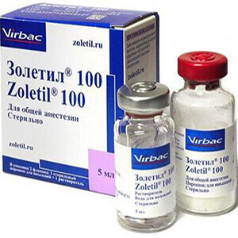

"ВЕТРИТУАЛ" МОСКВА
УСЫПЛЕНИЕ ПОПУГАЕВ КРОЛИКОВ ХОРЬКОВ
ПРЕПАРАТЫ ДЛЯ УСЫПЛЕНИЕ ЖИВОТНЫХ
усыпление животных только под общим наркозом, в фазе глубокого сна
усыпление собак
Усыпление собак на дому проводится под общим наркозом с полным обезболиванием. Наркоз рассчитывается по массе тела ЗОЛИТИЛ + пропофол. Два укола. Т-61
Лучше на дому или в клинике?
Процедура усыпления длится минут 10-15. Что бы избавить животное от мучений и дополнительного стресса лучше это сделать на дому. Врач может в дальнейшем забрать животное на кремацию или оставить животное владельцу для захоронения.
усыпление кошек
Усыпление кошек на дому проводится только под наркозом. Делается два укола, животное полностью засыпает. Пропофол+Золитил+Т61 Два укола.
Препараты для усыпления
Врач вначале определяет массу. Делается премедикация Рометаром. Расчитываетяся доза для глубокого наркоза - Пропофол + Золитил в одном шприце. Через 10 минут делается второй укол препарат Т 61. Самая гуманная схема усыпления.
усыпление мелких животных
Усыпление мелких животных - морских свинок, хомяков, шиншил, крыс, дегу. Общий глубокий наркоз, 2 укола внутримышечно.
Какая бывает кремация?
Существует индивидуальная и общая кремация. После индивидуальной- владельцу животного доставляется урна с прахом из крематория. Общая кремация проводится на утильзаводе, вместе с другими животными, урна не доставляется.
усыпление птиц
Усыпление птиц с наркозом на дому.
усыпление хорька
Усыпление хорьков на дому под общим наркозом Золитил+Рометар. Два укола. Т-61
усыпление кроликов
Усыпление кроликов на дому безболезненно. Наркоз общий
ТОЛЬКО СОЧЕТАНИЕ НЕСКОЛЬКИХ ПРЕПАРАТОВ ДАЕТ СОСТОЯНИЕ ГЛУБОКОГО СНА
РОМЕТАР аналог КСИЛАЗИН - премедикация для наркоза. Успокоение, обезболивание и миорелаксация
АНЕСТОФОЛ аналог ПРОПОФОЛ - вводная анестезия, поддержание общей анестезии, седация животных
ЗОЛЕТИЛ - общий анестетик, оказывающий диссоциативное действие с выраженным обезболивающим эффектом. Подавляя подкорковые участки мозга, оказывает седативное и анксиолитическое действия и вызывает расслабление мышц.
Т 61 - вызывает наркотическое состояние, и лишь потом наступает паралич дыхательных органов, остановка сердца и смерть головного мозга. Самый эффективный и безболезненный препарат для гуманного усыпления животных на дому.